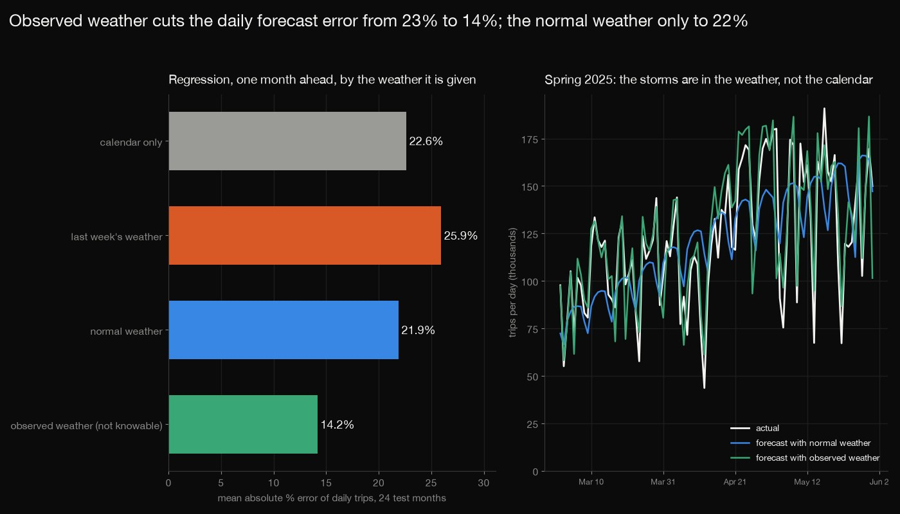
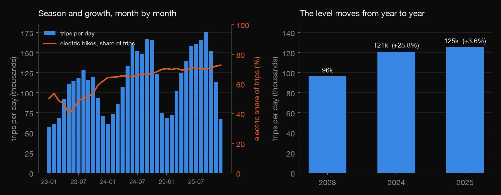
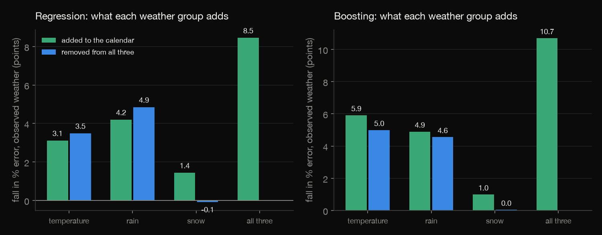
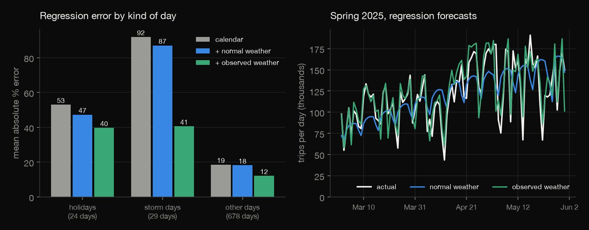
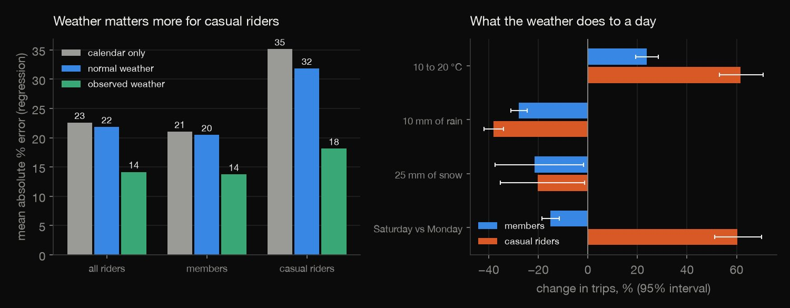

Python · Forecasting · 2026-10
How Much Does Weather Add To Bike Demand Forecasts?
Forecasting New York's daily Citi Bike trips a month ahead: observed weather cuts the error from 22.6% to 14.2%, but the normal weather gives 21.9% and last week's 25.9%. Temperature and rain add 3 to 6 points each, storms are the big misses, casual riders react far more than members.

Citi Bike system data under the Citi Bike Data License Agreement (analyses for non-commercial purposes; no stand-alone dataset): only per-day counts are published, no trip, rider or station rows; not affiliated with Citi Bike, Lyft or Citigroup. Weather: NOAA GHCN-Daily, Central Park only (Menne et al. 2012). 2023 to 2025, one city, no archive of real weather forecasts, untuned boosting, a trend that overshoots in 2025.
01 — The problem
Weather changes how many people ride, but a forecast made today for next month cannot know next month's weather. How much do temperature, rain and snow add to a forecast of daily bike trips, and how much of that can a forecaster really use?
The task follows GeeksforGeeks' "Predictive Modeling for Sales or Demand Forecasting", with New York's Citi Bike trips as the demand series: 125 million trips counted per day for 2023 to 2025, and the daily weather at Central Park.
02 — What I built
Month-by-month forecasts of 731 days, from the past only:
- The audit: 37 monthly files, 127 million rows counted per day and deleted; the schema, the duplicates, the November clock change and the files that hold trips by end month.
- The baselines: last year's weekday, and that scaled by recent growth.
- The models: a calendar regression and gradient boosting, with temperature, rain and snow added, removed or both.
- The weather trap: observed weather (an upper bound), the normal weather for the day and last week's weather.
- Check:
check.pyrecounts all 31,158 numbers in plain Python, solving every regression by Gaussian elimination.
03 — How it was built
- 01
Count 125 million trips, keep none
Each monthly file (25 GB of zips in all) is downloaded, counted by start date with DuckDB (trips, member, casual, classic, electric, audit counts), checked against a plain line count of its CSVs, and deleted. The Citi Bike licence allows analyses but not republishing the data, so only the daily counts are kept; no ride, station or rider.
assert a[0] == lines == sum(r[1] for r in daily) + a[2], (month, a[0], lines) - 02
Beat last year, if you can
The seasonal naive forecast is the same weekday a year earlier. Because the system grew, a second baseline scales it by the growth of the last 28 days over the same days a year before. For the first test month that window is not in the data, so no scaling is applied.
r = a[f0 - 28:f0].sum() / a[f0 - 28 - 364:f0 - 364].sum() if f0 - 28 - 364 >= 0 else 1.0 - 03
Refit the regression every month
For each of the 24 test months a regression of log trips on the calendar plus the chosen weather terms is fitted on every day before the month, then used for all its days, 1 to 31 days ahead. Boosting does the same on the trend-removed log trips.
Xtr, Xte = np.c_[calX[tri], olsW[tri][:, oc]], np.c_[calX[tei], o_te[:, oc]]; b = ols_fit(Xtr, ly); pred[t][f"ols_{cfg}"][tei] = np.exp(Xte @ b) - 04
Feed it weather you could really know
The models learn from observed weather, but at forecast time next month's weather is unknown. Three inputs are compared: the observed weather (an upper bound), the 1993 to 2022 normal for the day, and the last week's weather held flat.
info = {"obs": (olsW[tei], rawW[tei]), "clim": (clim_rows(ctab_ols, te), clim_rows(ctab_raw, te)), - 05
Recount it all without the libraries
check.pyrebuilds the daily series from the stored count files and recomputes the normals, 240 regression fits, baselines, scores, tests and Newey-West errors with no numpy: 31,158 numbers to a relative tolerance of 1e-8. The boosted forecasts are stored and checked by properties, and every score that uses them is recomputed from them.n = len(days); xtx = [[sum(full[i][a] * full[i][b] for i in range(n)) for b in range(19)] for a in range(19)]; inv = inverse(xtx)
04 — Results
The data. 125.2 million trips on 1,096 days (2023-01-01 to 2025-12-31) from 37 monthly files with no gaps, no duplicate ride id and the same 13 columns and two bike types in every file; the daily counts and Central Park's high, low, rain and snow (nothing missing, nothing flagged in these years) are all that is kept. Trips per day went from 96 thousand in 2023 to 121 thousand (+26%) in 2024 and 125 thousand (+4%) in 2025, while the electric share of trips rose from 50% to 66% to 70%. A forecast of this series has to cope with a level that moves.

Last year is a weak forecast, and a calendar barely beats it. Every month from January 2024 to December 2025 is forecast from the days before it only, one to 31 days ahead, 731 days in all. The error is the mean absolute percentage error, bias the mean signed error, and the last column the error over 2025 alone. The same weekday last year is 25.2% off and 6% too low on average, because the system grew. Scaling it by the last 28 days' growth over the same days a year earlier swaps that for a bias of +6%. A regression on the calendar (weekday, holidays, two yearly harmonics, a linear trend) does better, 22.6%, a gain of 3.3 thousand trips a day (Diebold-Mariano p = 0.004), but its trend, learned while the system grew 26%, runs 13% too high in 2025 when growth was 4%. Boosting on the calendar alone is no better (22.7%).
| Forecast | Error | Bias | 2025 |
|---|---|---|---|
| Last year | 25.2% | -6% | 21.9% |
| Last year, scaled | 24.6% | +6% | 22.9% |
| Regression | 22.6% | +6% | 21.5% |
| Boosting | 22.7% | +5% | 22.5% |
The weather is where the information is, if you know it. The regression and the boosted trees are given the weather three ways. Observed weather on the day is an upper bound: nobody knows next month's rain today. The honest cases are the normal weather for that day (the 1993 to 2022 mean over +-7 days) and the last week's weather held flat. With observed weather the regression's error falls from 22.6% to 14.2% and the boosting's to 12.0% (p < 0.001). With the normal weather it is 21.9%, no better than the calendar (p = 0.63), and boosting is 22.6%, a bias of -9% (p = 0.05, slightly worse). Last week's weather makes the regression worse, 25.9% (p = 0.025). The reason is in the weather itself: over these 731 days the normal weather explains 84% of the variance of the daily temperature, which is just the season the calendar already holds, and 0% of the rain and snow.
| Weather given | Regr. | Boost. | Bias |
|---|---|---|---|
| Calendar only | 22.6% | 22.7% | +6% |
| + last week's weather | 25.9% | 22.9% | +12% |
| + normal weather | 21.9% | 22.6% | +4% |
| + observed weather | 14.2% | 12.0% | +4% |
![Left: horizontal bars of the mean absolute percentage error of eight forecasts of daily trips over the 731 test days: last year scaled 24.6%; regression on the calendar only 22.6%, plus last week's weather 25.9%, plus normal weather 21.9%, plus observed weather 14.2%; boosting on the calendar only 22.7%, plus normal weather 22.6%, plus observed weather 12.0%. Right: the monthly error of four of them over the 24 months, with the observed-weather line far below the others in most months and every line spiking in December 2025.](charts/02_models.jpg)
Temperature and rain each add about as much, and snow adds nothing more. Adding one weather group to the calendar, or removing it from all three (observed weather, in percentage points; each cell is added / removed): rain is worth 4.2 / 4.9 points in the regression against 3.1 / 3.5 for temperature, whose seasonal part the calendar already knows. Boosting reverses the order: 5.9 / 5.0 for temperature and 4.9 / 4.6 for rain. Removing snow from all three changes the error by -0.1 and 0.0 points: the precipitation total already counts melted snow, and snow days are few.
| Weather | Regr. +/- | Boost. +/- |
|---|---|---|
| Temperature | 3.1 / 3.5 | 5.9 / 5.0 |
| Rain | 4.2 / 4.9 | 4.9 / 4.6 |
| Snow | 1.4 / -0.1 | 1.0 / 0.0 |
| All three | 8.5 | 10.7 |

Holidays and storms are the big misses. The regression is 19% off on the 678 ordinary days, 53% off on the 24 holidays and 92% off on the 29 days with an inch of rain or snow, where it forecasts 92% too many trips. Observed weather brings the storm days to 41%; normal weather leaves them at 87%. The worst day is 2025-12-27: 12,871 trips after 66 mm of snow, against a forecast of 79,377. 8 of the 12 worst days of the honest regression are holidays or storms.
| Day | Calendar | Normal | Obs. |
|---|---|---|---|
| Holidays (24) | 53% | 47% | 40% |
| Storms (29) | 92% | 87% | 41% |
| Other (678) | 19% | 18% | 12% |

Casual riders react to the weather more than members. Weather cuts the casual riders' error from 35% to 18% and the members' from 21% to 14%, and normal weather helps neither by much (32% and 20%). The table is the all-weather regression fitted on all 1,096 days, with 95% intervals (Newey-West); it describes these three years and is not a causal effect. Casual trips rise 62% from 10 to 20 °C against 24% for members, and casual riders go out on Saturdays (+60%) when members do not (-15%).
| Effect, % | Members | Casual |
|---|---|---|
| 0 to 10 °C | +37 (29, 45) | +105 (92, 120) |
| 10 to 20 °C | +24 (19, 28) | +62 (53, 71) |
| 20 to 30 °C | +12 (5, 20) | +27 (15, 40) |
| 10 mm rain | -28 (-31, -24) | -38 (-42, -34) |
| 25 mm rain | -38 (-42, -33) | -49 (-54, -43) |
| 25 mm snow | -22 (-37, -2) | -20 (-35, -1) |
| Sat v Mon | -15 (-18, -12) | +60 (51, 70) |
| Holiday | -35 (-43, -26) | +5 (-5, 17) |

Traps found. The monthly file holds the trips that end in the month, so 20,410 rows start in another month (and 31 December 2025 needs the January 2026 file); counting by start date fixes it. All 1,125 trips that end before they start are in the three Novembers, when the clocks go back. 47,300 rows last a day or more. The schema did not change inside 2023 to 2025 (earlier years were not examined). The regression's trend and the boosting's plug-in of an average weather are the two ways a forecast quietly goes wrong here: a level that nearly stopped growing, and a model that learned from rainy days being fed the average weather.
05 — What I'd do next
- Add a real weather forecast, from an archive of forecasts issued each day, to see how many days ahead it beats the normal weather and how much of the upper bound it recovers.
- Model the level: stations, docks and fleet size as predictors, and a trend that can flatten, instead of a straight line learned in a growth year.
- Forecast one day ahead, where tomorrow's weather forecast is known, and compare the gain with the month-ahead case.